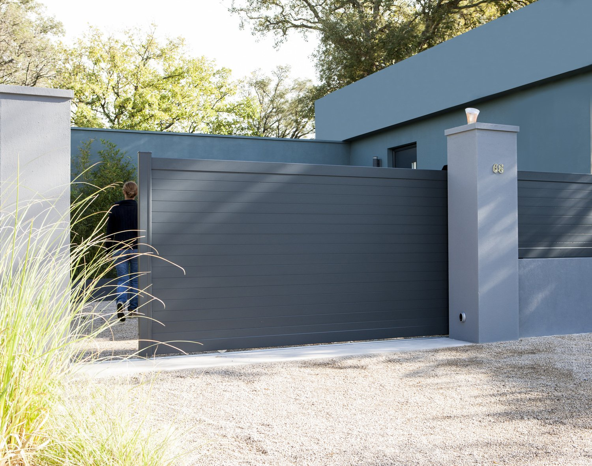
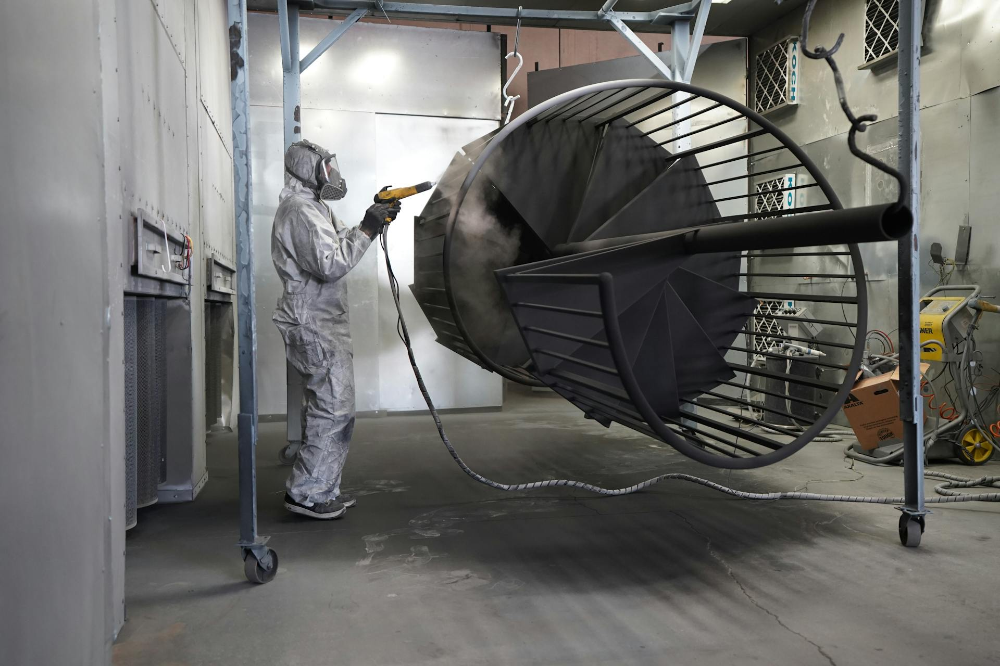

La Seyne-sur-Mer — Var (83)
Nos services — Sablage, métallisation et thermolaquage dans le Var
Atelier spécialisé depuis 2020. Nous traitons vos pièces métalliques pour les particuliers, ferronniers, métalliers et architectes de toute la région PACA.
Ce que nous faisons
STV 83 est un atelier de traitement de surface implanté à La Seyne-sur-Mer. Nous prenons en charge toutes vos pièces métalliques — du portail rouillé au profilé aluminium neuf — et leur appliquons une finition durable adaptée à l'environnement varois : sablage, métallisation au zinc et thermolaquage réalisés au même endroit. Nos clients : particuliers, artisans, architectes et collectivités du Var et de toute la région PACA.

Thermolaquage de portail
Rénovez ou repeignez votre portail en fer forgé, acier ou aluminium par thermolaquage poudre polyester. Résistance 7-20 ans, 180+ teintes RAL, aucune coulure.
En savoir plus
Sablage & grenaillage
Décapage par projection d'abrasif haute pression pour éliminer rouille, peintures anciennes et calamine. Préparation indispensable avant thermolaquage. Corindon, grenat, billes de verre.
En savoir plus
Thermolaquage aluminium
Process spécifique alu : dégraissage, chromatation, poudre polyester, four 200 °C. Volets, fenêtres, vérandas, portails alu, profilés. Tenue UV garantie en milieu méditerranéen.
En savoir plus
Métallisation
Projection à chaud de zinc sur acier sablé : couche sacrificielle anticorrosion pour le bord de mer. Système duplex avec thermolaquage — la protection la plus durable du littoral varois.
En savoir plusTous nos matériaux traités
Nous intervenons sur toutes les natures de métal, neuf ou à rénover.
Pièces neuves ou à rénover, petits éléments ou grandes structures — contactez-nous pour valider la faisabilité. Devis gratuit sous 24 h sur photo WhatsApp.
Un projet en tête ?
Demandez votre devis
Envoyez-nous une photo de votre pièce, on vous rappelle sous 24 h.